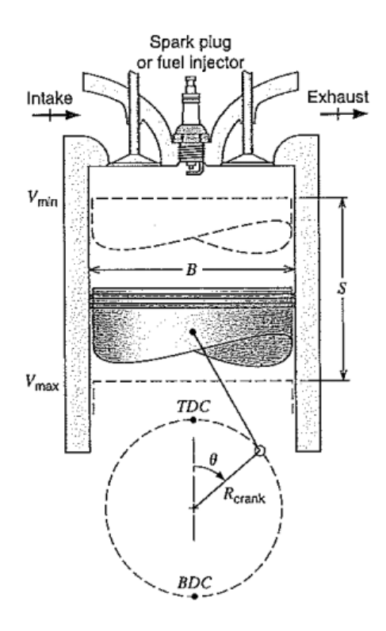
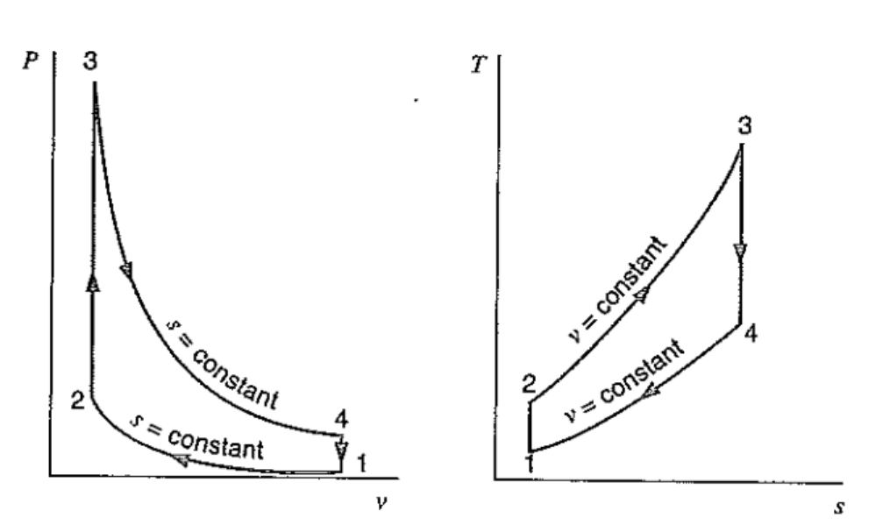
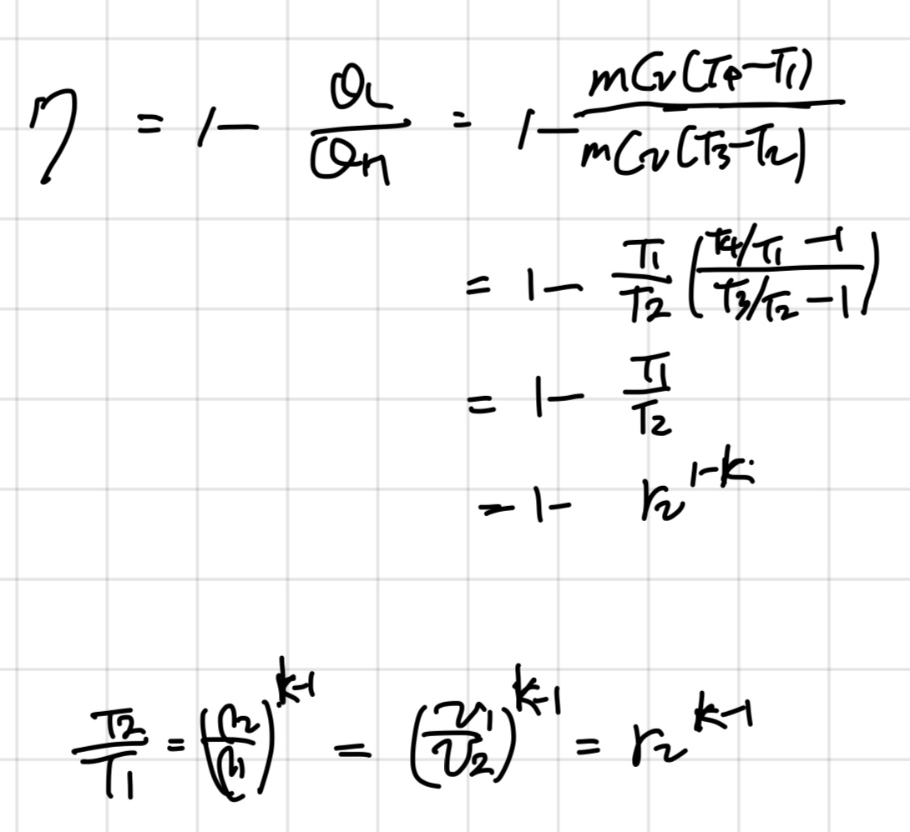
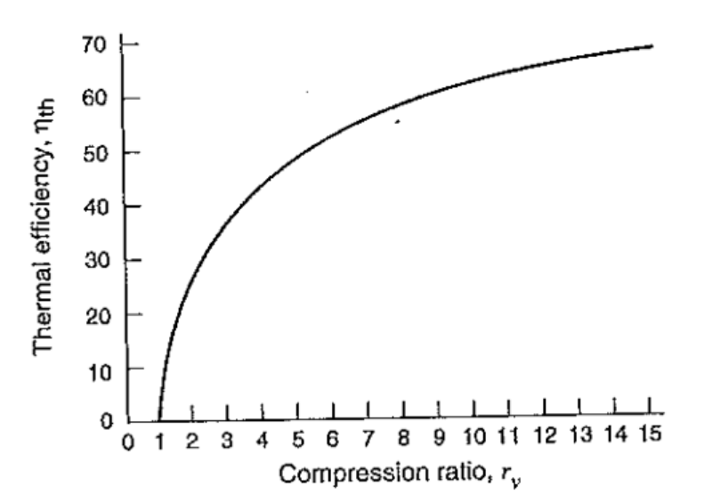
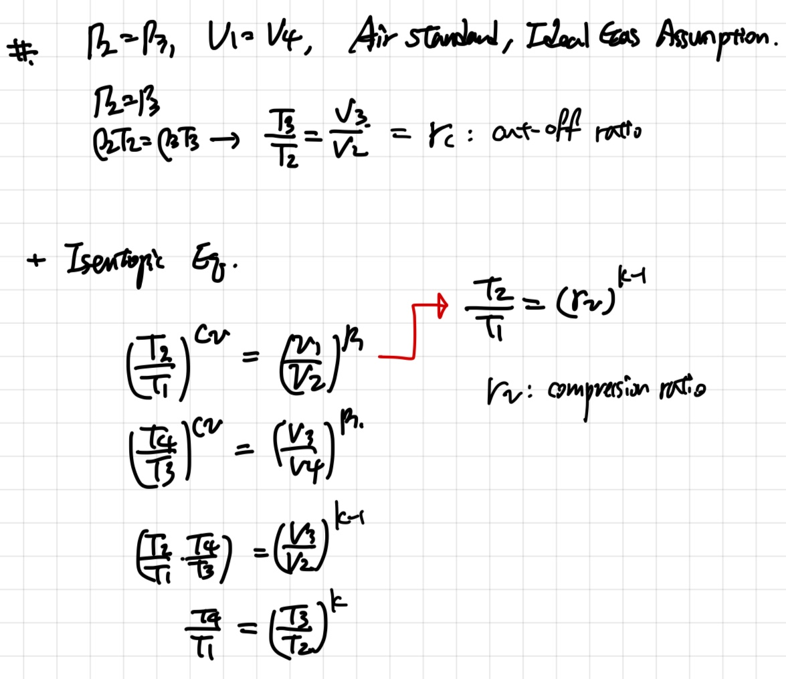

[Thermodynamics] Ch 10. Otto - Diesel cycle
이전 포스터에서 배운,
Brayton cycle은
기체를 연료와 연소시킨후, 터빈을 돌려 일을 하는 구조였다.
따라서, Jet propulsion이나 원자력에서 만든 에너지로 일을 하는 경우 사용한다.
이제, 산업혁명에서 쓰이던 내연기관
Internal combustion engine cycle
에 대해서 배워보자.
핵심은, 연소과정을 통해 피스톤을 움직여 일을 하는 방식이다.
(brayton은 터빈을 돌렸던 것과 상응)

위 사진을 보면, Intake, exhaust가 보일 것이다.
Intake에서 공기를 내부 엔진 실린더에 넣고,
가둔후 압축하고 연료를 넣은후, Spark해주면
강한 폭발을 일으키며, 피스톤이 외부에 일을 하는 방식이다.
이후, 연료후 byproducts 부산물들은 Exhaust 로 나가게 되며,
위 과정이 한 cycle이다.
위 내연기관은,
미세한 detail차이로, 크게 Otto와 Dissel cycle로 나뉜다.
1. Otto Cycle

과정을 차근차근 살펴보자.
1 -> 2 과정: 들어온 공기를 압축시키고 동시에 연료주입
2->3 과정: Air fuel mixture 에 Heat이 주입된다 (부피일정)
이후 State 3 특정 높은 압력에 도달하게 되면,
3 -> 4 과정: 강한 폭발을 일으키며, 부피가 늘어나 외부에 일을 한다.
4 -> 1 과정에서, 내부 부산물들이 나가고 새로운 fresh air가 들어온다. (부피일정)
T-s그래프를 통해서, 효율을 구해보자.
![[Thermodynamics] Ch 10. Otto - Diesel cycle](./images/img-003.png)
여기서, Isentropic equation을 통해서
ds = 0 인 1->2, 3->4 과정을 이용하면
1,2 그리고 3,4의 온도 비율이 일정하다는 것을 알 수 있다.
따라서, 효율은 다음과 같이 compression ratio (r_v) 로 나타난다.


즉, 열기관의 효율을 높이기 위해서는 V1과 V2의 차이가 커야한다는 것이다.
하지만, 실제 Engine 에서는 부피 차이가 커지게 되면,
State 3의 압력이 더 커지게 되고,
State 2 -> 3
Fuel air mixture에 열을 가해줌과 동시에 일정부피를 유지하며 큰 압력을 도달하는 과정
속에서 폭발이 일어나게 된다.
We called this 'detonate'
아무리 생각해도 일정 부피를 유지하기 힘든 조건이다.
사실 여기서 높은 압력까지 일정부피를 버티어야
Otto cycle의 효율이 올라가게 된다.
하지만, 버티지 못하고 내부에서 폭발이 일어나 버리는 경우가 빈번히
발생한다.
이 폭발하는 문제를 해결하기 위해 탄생된 Cycle이 바로
Dissel cycle
2. Dissel Cycle
핵심은 바로, 과정 2 -> 3''의 Otto cycle heat addition(일정 부피) 과정이
2 -> 3 일정압력 조건 으로 변화하였다. (밑 왼쪽 그래프)
![[Thermodynamics] Ch 10. Otto - Diesel cycle](./images/img-006.png)
Process를 천천히 살펴보자.
1번 state 에서 공기는 주입되어있는 상태이고, 그대로 State2 까지 압축된다.
(1->2) 공기 압축
(2->3) 연료 주입, 일정압력
압축된 공기에 연료를 주입하고 일정압력으로 유지시켜 주면,
자동으로 온도가 올라가게 된다.
그리고 특정 온도에 도달하게 되면
자연 발화로 폭발
하게 되고
(3->4) 피스톤 팽창하여 외부에 일
(4->1) 일정 부피(최고부피)에서 연소부산물 배출, fresh air주입
자 이제 Dissel cycle의 효율을 derive해보자.
과정 2 -> 3 열 투입과정은 등압
과정 1 -> 4는 등적과정
+ Brayton cycle 설명당시, Air standard Ideal gas assumption을 사용하면

여기서 Otto cycle과 다르게,
Cut off ratio 가 새롭게 정의된다.
Otto cycle은 Compression ratio에 의해서만 효율이 정해졌지만,
Dissel 의 경우, Pressure constant 과정에서 부피가 얼마나 증가했는가에 따라서,
효율이 달라진다.
최종 효율 Equation은 다음과 같다.
![[Thermodynamics] Ch 10. Otto - Diesel cycle](./images/img-008.jpg)
즉, 밑의 그래프와 같이
Compression ratio가 커짐에 따라서 dissel의 효율은 감소하고,
Cut off ratio 가 커지면 Dissel 효율은 증가한다.
![[Thermodynamics] Ch 10. Otto - Diesel cycle](./images/img-009.png)